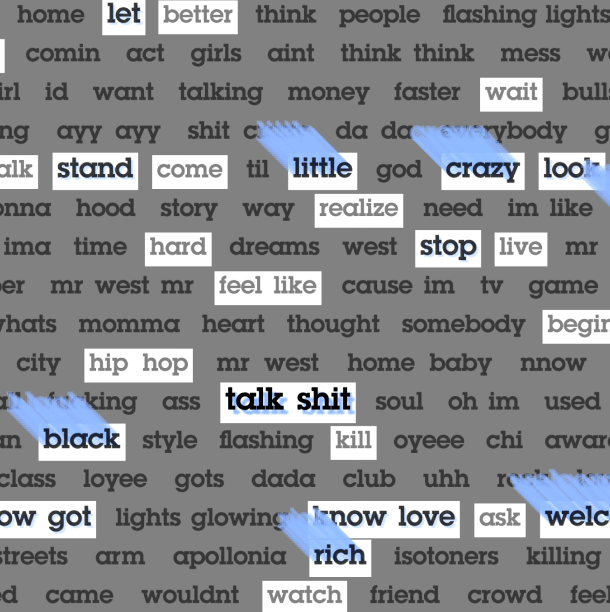
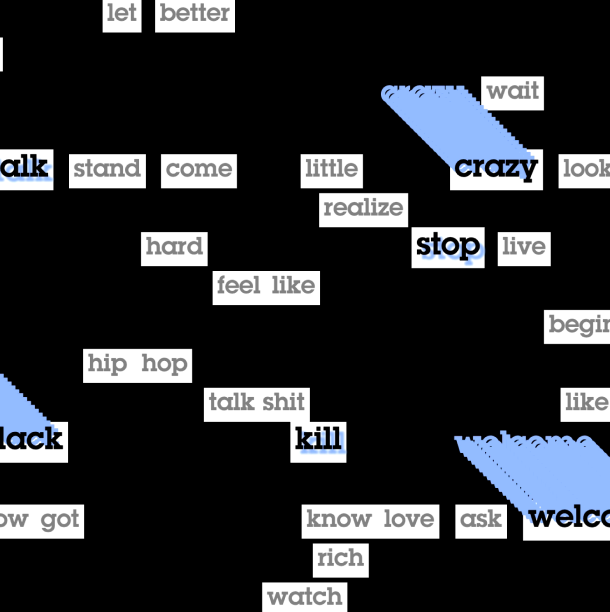
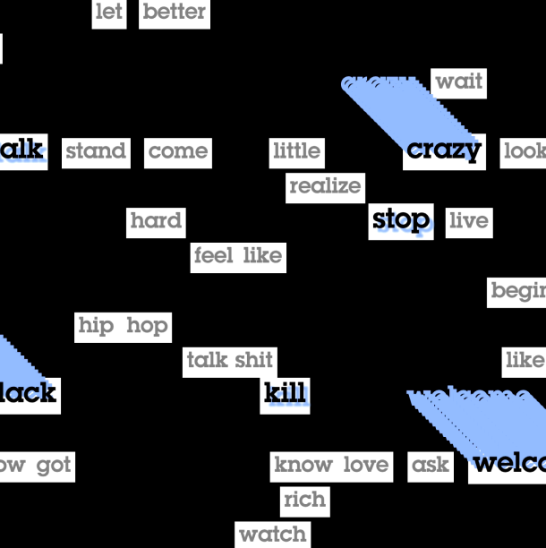
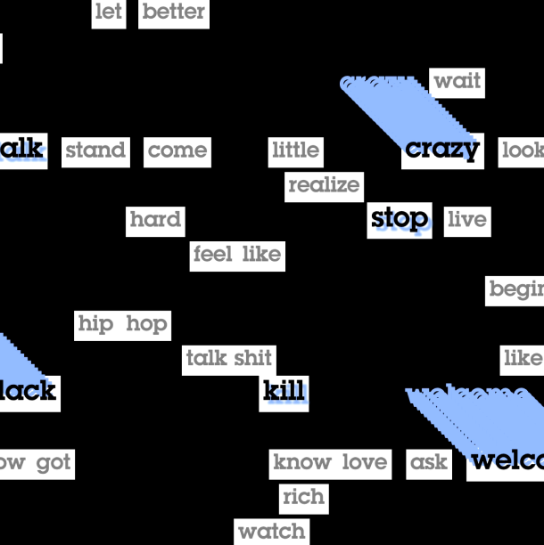

Prozess
Ein wichtiger Teil des Prozesses war die Nutzung von Python für die Datenverarbeitung, insbesondere beim Generieren der Log-Likelihood-Funktion. Diese Erfahrung hat mir gezeigt, wie vielseitig und praktisch Python für Aufgaben wie Filtern und Sortieren ist.

 

